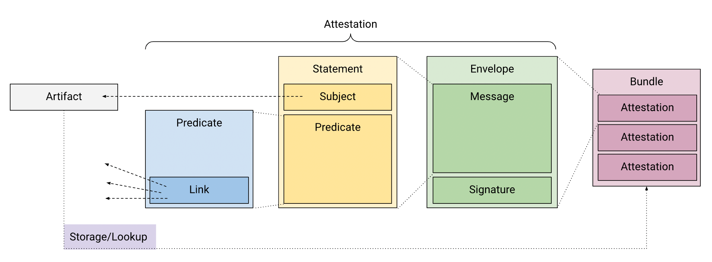
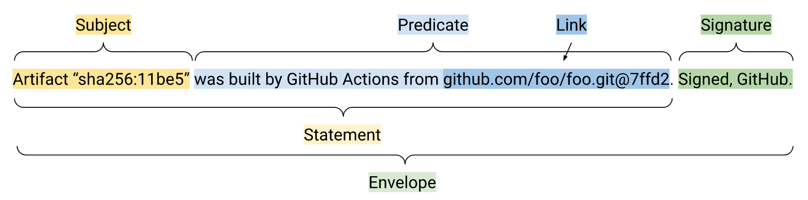
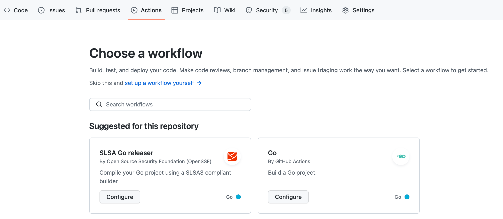
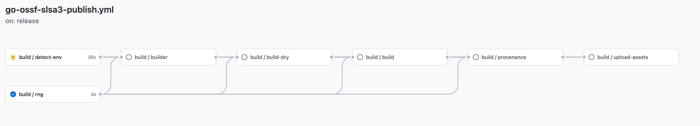
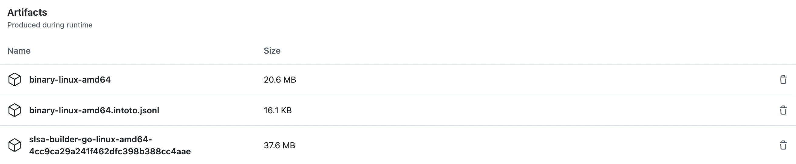

SLSA『读作 salsa』，全称 Supply-chain Levels for Software Artifacts，是 OpenSSF 推出的一项软件供应链安全标准，框架，和控制清单，用于防止包篡改、提高完整性以及保护包和基础设施『如包管理平台和构建平台』。
使整个 SDL 流程的任何环节从『足够安全』到尽可能具有弹性。
软件开发的任何过程都有可能引入供应链安全问题，随着系统越来越复杂，需要坚实的基础和随系统改变的安全方案才能更好的应对新的威胁。SLSA 就是构建此坚实基础的标准方案。
SLSA 具体是做什么的
软件供应链安全里，SBOM 是软件的物料清单，告诉使用者，此软件中使用了哪些依赖等信息。类比之下，可以理解为从食品加工厂生产的食物上注明的配料表。而 SLSA 则可以类比为告诉你，用于加工该食品等各个配料已经食品本身，是以安全的方式进行加工生产的，例如干净卫生的加工环节，外卖袋子上防篡改的密封胶带，确保你在食用时，食物未被他人动过。
所以 SLSA 也是一套信任机制，确保软件成分的完整性和可验证性。这意味着，作为软件使用者，你不仅知道软件中有什么（依赖），还可以确认它是不是真的只包含这些（依赖），以及是否是来自可信平台构建完成的，而没有被掺杂进其它恶意代码。这可以避免以下安全风险：
- 代码修改（通过在源代码开始构建前，向代码添加防篡改『标签』）
- 上传的软件不是由预期（可信）的 CI/CD 平台构建的（通过使用平台相关的标签来标记软件，显示哪个构建平台创建了它）
- 针对构建平台的威胁（通过为构建平台服务商提供 『构建过程』的最佳实践）
Provenance
Provenance 是 SLSA 引入的一个重要概念，它的作用就是为了实现软件供应链中的完整性和可验证性。Provenance 提供了一组元数据，描述软件的出处，它的作用如下
- 使用者可以验证软件是否是根据预期构建的
- 如果需要，其他人可以重新构建该软件
Provenance 和另一个概念 Attestation 是相辅相成的，它存储了关于软件的经过身份验证的签名（元数据）。它的结构描述如下图：

下图是一个示例

而 Bundle 则是 Attestation 的合集，Storage/Lookup 表示 Bundle/Attestation 的存储位置或者告知使用者如何获取它们。
各个部分的推荐构建方式见下表
| Component | Recommendation |
|---|---|
| Envelope | DSSE (ECDSA over NIST P-256 (or stronger) and SHA-256.) |
| Statement | in-toto attestations |
| Predicate | Choose as appropriate, i.e.; Provenance, SPDX, other predicates defined by third-parties. If none are a good fit, invent a new one |
| Bundle | JSON Lines, see attestation bundle |
| Storage/Lookup | TBD |
Provenance的构建标准见 SLSA • Distributing provenance。
安全级别
SLSA 为供应链制定了一项 安全级别 标准，共分为 4 级
| Track/Level | Requirements | Focus |
|---|---|---|
| Build L0 | (none) | (n/a) |
| Build L1 | Provenance showing how the package was built | Mistakes, documentation |
| Build L2 | Signed provenance, generated by a hosted build platform | Tampering after the build |
| Build L3 | Hardened build platform | Tampering during the build |
各个级别标注了说需要达到杜条件，已经所专注地保护的软件供应链阶段。
示例
官网给出了一个使用 Docker 下的 curl 的例子，描述它是如何构建并达到 SLSA 4 安全级别的。
如果使用 Github，可以通过 Gtihub Action SLSA releaser 为开源项目构建 SLSA 3，如果是私有仓库使用该 Action 则会报错
Repository is private. The workflow has halted in order to keep the repository name from being exposed in the public transparency log.
下面以开发者视角，在一个 Go 编写的项目展示它的使用，首先在项目根目录新增一个 .slsa-goreleaser.yml 文件。
# Version for this file.
version: 1
# (Optional) List of env variables used during compilation.
env:
- GO111MODULE=on
# The OS to compile for. `GOOS` env variable will be set to this value.
goos: linux
# The architecture to compile for. `GOARCH` env variable will be set to this value.
goarch: amd64
# (Optional) Entrypoint to compile.
main: ./main.go
# Binary output name.
# {{ .Os }} will be replaced by goos field in the config file.
# {{ .Arch }} will be replaced by goarch field in the config file.
binary: binary-{{ .Os }}-{{ .Arch }}在 Action 页面选择 SLSA Go releaser，点击 Configure 后提交合并即可，这个示例不需要做额外配置。

下面创建一个 Releases，触发 SLSA Go releaser

构建完成后，生成了这 3 个文件，开发者可将这些文件上传至 Releases 中。

目前 SLSA releaser 还处于开发阶段，功能尚不完善，可持续关注。